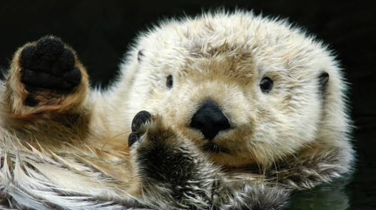

- history
- diet
- habitat
Sea otters often float at the water's surface in forests of kelp, or giant seaweed, and entangle themselves to keep from moving in the rolling sea.
While floating on their backs, sea otters not only nap, but also use rocks to help them open mussels or other shellfish. Otters place a rock on their chests and smash the shellfish against it until it breaks open to reveal the tasty meat inside. They also snack on such aquatic creatures as sea urchins, crabs, squid, octopuses, and fish.
Sea otters are the only otters to give birth in the water. Mothers cuddle their young while floating on their backs and hold infants on their chests to nurse them. They quickly teach them to swim and hunt for themselves.
